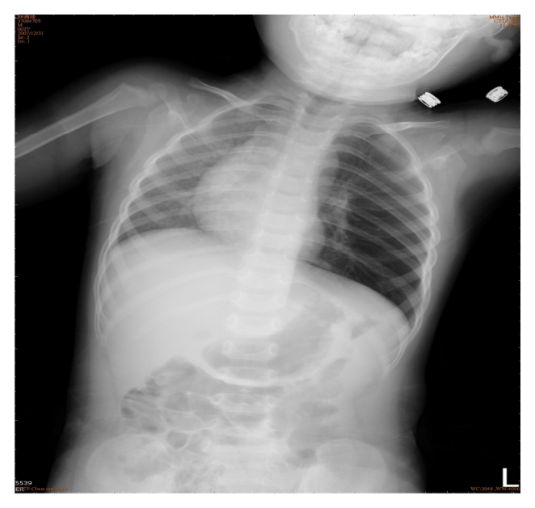
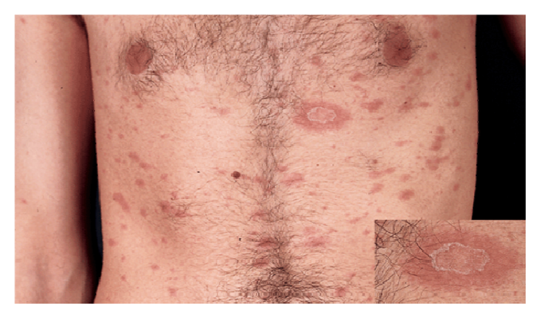
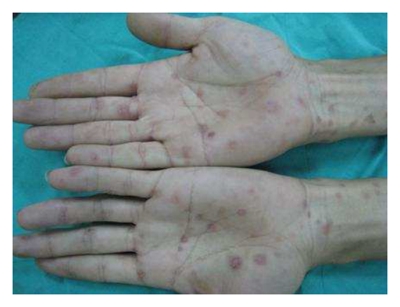
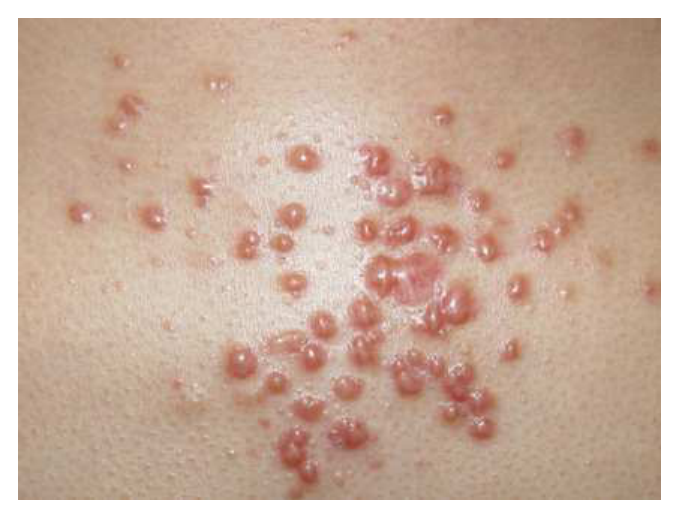
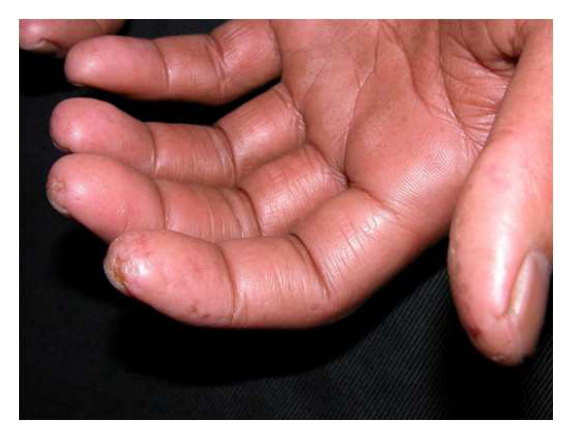
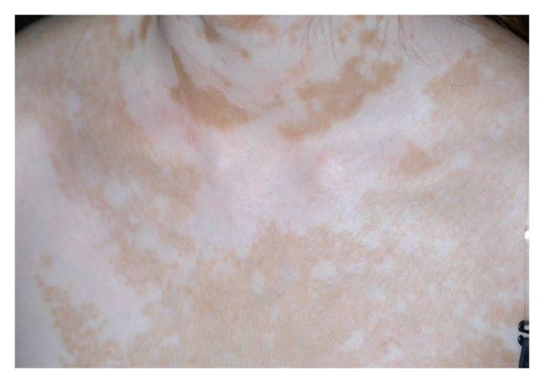
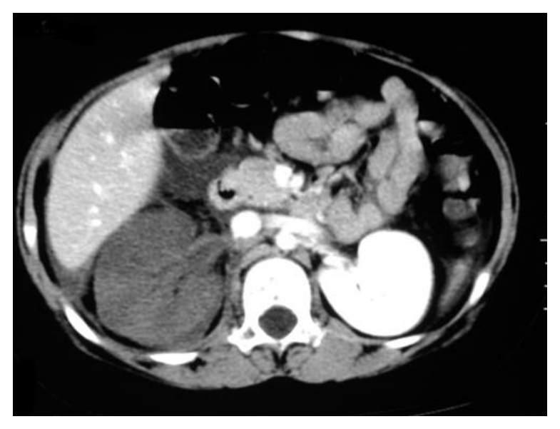

106 年第 2 次醫師醫學（四）（包括小兒科、皮膚科、神經科、精神科等科目及其相關臨床實例與醫學倫理）試題與答案
這一頁是民國 106 年第 2 次醫師醫學（四）（包括小兒科、皮膚科、神經科、精神科等科目及其相關臨床實例與醫學倫理）的整份歷屆試題，共 80 題，題目與標準答案出自考選部「國家考試試題及測驗式試題答案」開放資料。以下逐題列出題幹、選項與答案；要計時作答或記錄成績，請用線上練習。
考選部原始場次代碼：106080
線上作答這一科 →
全部 80 題
第 1 題
14個月大的男生，出現咳嗽並有呼吸急促已有10天，因為一直沒有發燒，直到媽媽發現他食慾不振的情形才到門診求治，肺部聽診時發現兩側都可以聽到喘鳴聲（wheezing），左側呼吸音比右側小聲，胸部X光片檢查如圖所示，下列何者是最有可能的診斷？

- （A）呼吸道異物
- （B）先天性心臟病
- （C）臟器轉位症候群
- （D）左側氣胸
答案：（A）
第 2 題
有關非傷寒沙門氏菌（nontyphoidal Salmonella）感染，下列何者不須常規使用抗生素治療？
- （A）大於3個月大之嬰兒
- （B）腹脹且有毒性病容
- （C）合併菌血症
- （D）病人有sickle cell disease
答案：（A）
第 3 題
剛出生的足月兒，體重3,000公克，嬰兒室護理師通知你，此足月兒呼吸60次/分，心跳130次/分，肛溫37℃，嘴邊常常流出大量白沫，偶爾會咳嗽。下列何者為最可能的診斷？
- （A）肺炎
- （B）腦膜炎
- （C）食道閉鎖
- （D）十二指腸閉鎖
答案：（C）
第 4 題
自然產之7天大嬰兒，出現嘔吐及進食困難症狀，身體診察發現有角弓反張（opisthotonos），實驗室檢查有低血糖現象，尿液檢查正常，汗水有一奇特的味道，病人有代謝性酸中毒。最可能的診斷為：
- （A）腎小管性酸中毒（renal tubular acidosis）
- （B）楓糖尿症（maple syrup urine disease）
- （C）Arnold-Chiari氏畸型（Arnold-Chiari malformation）
- （D）先天性甲狀腺功能低下症（congenital hypothyroidism）
本題送分，無標準答案
第 5 題
有關IgA nephropathy的敘述，下列何者錯誤？
- （A）可能有家族的集群性（familial clustering）
- （B）有些病童在發病後的15～20年可能會進展到慢性腎病或腎衰竭
- （C）因為會復發，進入末期腎病後不建議腎移植
- （D）血中IgA值並沒有診斷價值，因為只有部分的病童會升高
答案：（C）
第 6 題
一位母親帶兩歲大幼兒至門診接受健康檢查，擔心孩子比同年齡的小孩發展較慢。下列那一個狀況需要轉介至聯合評估中心做進一步的發展評估？
- （A）講話ㄓㄔㄕ發音不清楚
- （B）無法認出四種顏色
- （C）不會用手正確的指出自己的五官
- （D）不會說四個字的短句
本題送分，無標準答案
第 7 題
先天性甲狀腺低能症（congenital hypothyroidism）的新生兒，最常見下列何項症狀？
- （A）出生時身高體重明顯過小
- （B）出生時頭圍較小
- （C）睡眠不好常會哭鬧
- （D）新生兒黃疸持續時間較長
答案：（D）
第 8 題
有關Henoch-Schönlein purpura的敘述，下列何者正確？
- （A）紫斑易出現在軀幹
- （B）主要是IgM抗體沈積所引起之血管炎
- （C）抗核抗體（antinuclear antibody）陽性
- （D）血小板數目正常或增加
答案：（D）
第 9 題
E-B病毒（Epstein-Barr virus）急性感染後引起的單核球增多症（infectious mononucleosis），下列何種血清抗體最晚出現？
- （A）anti-VCA IgG
- （B）anti-VCA IgM
- （C）anti-EBNA Ab
- （D）anti-EA Ab
答案：（C）
第 10 題
當法洛氏四重症（tetralogy of Fallot）病兒發生發紺發作（hypoxic spells, blue spells）時，心雜音會如何改變？
- （A）變大聲
- （B）不變
- （C）變小聲
- （D）會改變成舒張期雜音
答案：（C）
第 11 題
16歲女孩，因遲遲沒有初經，但有乳房發育，外生殖器也屬於典型女性，染色體檢查結果為46, XY，下列何種情況最不可能？
- （A）5α-reductase II基因突變
- （B）完全型androgen insensitivity syndrome
- （C）aromatase基因突變或缺損
- （D）SRY基因突變或缺損
本題送分，無標準答案
第 12 題
10個月大的男嬰高燒6天，軀幹及四肢可見皮膚紅疹且手腳腫脹，結膜充血發紅，同時有草莓舌及嘴唇乾裂，在頸部可摸到淋巴結腫大，下列何者錯誤？
- （A）最可能的診斷是川崎氏症（Kawasaki disease）
- （B）治療可使用口服Aspirin
- （C）若此病人使用IVIG 2g/kg治療，於1歲1個月時可施打水痘疫苗
- （D）需安排心臟超音波檢查
答案：（C）
第 13 題
5歲女童因發燒5天而住院，同時有鼻塞及雙眼皮浮腫，身體診察有肝脾腫大、頸部淋巴結腫大、化膿性扁桃腺炎，住院後抽血檢查報告如下：血紅素：11 g/dL，血比容：34%，白血球 : 13300/uL，非典型淋巴球：20%，血小板：200000/uL，GOT：94 IU/L，GPT：109 IU/L，C-反應蛋白：3.535 mg/dL。最可能是下列何種感染？
- （A）Epstein-Barr virus
- （B）Enterovirus
- （C）Streptococcus pneumoniae
- （D）Staphylococcus aureus
答案：（A）
第 14 題
足月新生兒，身長42 cm、體重 2.3 kg、頭圍偏小、小眼廓、下頜發育不良、上唇薄，下列疾病中最可能的診斷為何？
- （A）胎兒酒精症候群（fetal alcohol syndrome）
- （B）新生兒戒斷症候群（neonatal abstinence syndrome）
- （C）唐氏症（Down syndrome）
- （D）威廉氏症候群（Williams syndrome）
答案：（A）
第 15 題
新生兒胎便吸入（meconium aspiration syndrome）的標準處置中，為了避免惡化甚至引起持續性肺動脈高壓（pulmonary hypertension），下列何者為最首要的處理？
- （A）出生後立即使用表面張力素
- （B）氣管內抽吸清除胎便並處理呼吸窘迫與缺氧
- （C）正壓換氣呼吸
- （D）體外膜氧合ECMO（extracorporeal membrane oxygenation）
答案：（B）
第 16 題
緊急處理新生兒氣胸（pneumothorax）時，可於胸壁那個位置垂直插入引流針治療？
- （A）第一肋間隙（intercostal space）
- （B）第二肋間隙
- （C）第三肋間隙
- （D）第四肋間隙
本題送分，無標準答案
第 17 題
許多腸道病原體感染，亦會產生腸道外疾病，下列那一種病原體與腸道外疾病的組合錯誤？
- （A）Shigella- glomerulonephritis
- （B）Campylobacter- immunoglobulin A（IgA）nephropathy
- （C）rotavirus- reactive arthritis
- （D）Yersinia- hemolytic anemia
答案：（C）
第 18 題
下列何種檢查，最無法確定目前胃中有幽門桿菌（Helicobacter pylori）感染？
- （A）胃切片組織培養陽性
- （B）血中抗幽門桿菌抗體陽性
- （C）碳-13尿素吹氣檢查陽性
- （D）糞便幽門桿菌抗原檢驗陽性
答案：（B）
第 19 題
有關腸套疊（intussusception）之敘述，下列何者錯誤？
- （A）常見的好發年齡，介於六個月至一歲
- （B）絕大部分病童，可以找出lead point
- （C）最好發的腸段是迴結腸（ileocolic）處
- （D）典型的症狀，為腹痛、腹部腫塊與血便
答案：（B）
第 20 題
關於高血鉀（hyperkalemia）的處理，下列何者敘述錯誤？
- （A）停止所有鉀離子的補充
- （B）若血鉀濃度高於6.5 mEq/L，心電圖可能先出現peak T waves，進一步可能出現prolonged PR interval
- （C）靜脈內注射胰島素改善高血鉀時，不可同時加葡萄糖點滴
- （D）若高血鉀對於藥物的反應不佳，應考慮透析治療
答案：（C）
第 21 題
15歲男生為田徑隊員，在訓練3小時後，發生雙側大腿疼痛，尿液變成紅色而至急診求診。尿液檢查發現，潛血反應（occult blood）：3+， urobilinogen: 3+， RBC：1-2/HPF，WBC：0～2/HPF。抽血檢查發現，AST/ALT= 120/130 U/L，K=5.0 mM，LDH=400 mg/dL， CK=143,840 U/L。下列何者為最可能的診斷？
- （A）急性肝炎（acute hepatitis)
- （B）急性腎絲球腎炎（acute glomerulonephritis）
- （C）橫紋肌溶解症（rhabdomyolysis）
- （D）急性溶血（acute hemolysis）
答案：（C）
第 22 題
下列何者為神經纖維瘤症（neurofibromatosis）最典型的皮膚特徵？
- （A）linear hypopigmentation
- （B）cherry red spots
- （C）port-wine stain
- （D）café-au-lait spots
答案：（D）
第 23 題
12歲男童，出生體重、身長及一歲前生長發育均正常，身體診察發現身高低於正常平均值，骨齡比實際年齡小，抽血檢查發現生長因子（IGF-1）低於年齡正常值但與骨齡相吻合，下列何者正確？
- （A）IGF-1缺乏症（IGF-1 deficiency）
- （B）生長激素缺乏症（growth hormone deficiency）
- （C）甲狀腺功能低下（hypothyroidism）
- （D）體質遲緩（constitutional growth delay）
答案：（D）
第 24 題
有關於先天性免疫缺損症的敘述，下列何者錯誤？
- （A）severe combined immunodeficiency患者的淋巴節、扁桃腺、Peyer's patch等淋巴組織，通常缺乏或者極度發育不良
- （B）severe combined immunodeficiency患者於出生時經常有淋巴球低下的情況發生，患者出生後幾個月就會感染肺炎，中耳炎，甚至併發敗血症
- （C）chronic granulomatous disease和leukocyte adhesion deficiency 皆屬吞噬細胞的問題，DiGeorgesyndrome屬T細胞免疫功能異常
- （D）補體缺損易有自體免疫疾病，其中alternative pathway deficiencies最常合併發生自體免疫疾病
答案：（D）
第 25 題
關於嬰兒猝死症候群（sudden infant death syndrome , SIDS）的敘述，下列何者錯誤？
- （A）SIDS定義為一歲以下嬰兒突然死亡，且經過完整病理解剖、解析死亡過程並檢視臨床病史等詳細調查後，仍未能找到死因者
- （B）發生率在一個月以下的新生兒達高峰，其次在2-3個月大時，也很常見
- （C）危險因子包括胎兒在子宮內暴露吸菸、早產、未哺育母乳、趴睡、與父母共眠、嬰兒床有鬆軟物品
- （D）研究發現SIDS也可與基因變異有關，例如心肌之鈉鉀通道、自律神經系統發展、呼吸控制中樞等之基因異常
本題送分，無標準答案
第 26 題
有關6歲蕁麻疹（urticaria）病童，下列敘述何者正確？
- （A）蕁麻疹急性發作時，類固醇是首選藥物
- （B）重複暴露特定過敏原引起的反覆急性蕁麻疹（recurrent acute urticaria with repeated exposures to a specificagent）亦屬慢性蕁麻疹
- （C）慢性蕁麻疹的病人大部分可以用抽血來找到過敏原
- （D）慢性蕁麻疹病人的治療藥物以H1 antihistamines為主，如病人反應效果不好，可以在該藥品許可範圍內加大劑量
答案：（D）
第 27 題
關於缺鐵性貧血（iron-deficiency anemia）的敘述， 下列何者錯誤？
- （A）易發生於9至24個月大的兒童
- （B）青春期的女生，常因經血量太多而引起
- （C）因為身體內的鐵不夠，每個紅血球會被盡量公平的分配到一樣的鐵，使得紅血球分布寬度 （red celldistribution width）減少
- （D）發生缺鐵性貧血時，血清鐵（serum iron） 的量會減少，總鐵結合能力（total iron binding capacity）會增加
答案：（C）
第 28 題
1歲孩童因眼睛無虹膜（aniridia），門診定期接受腹部超音波檢查，1年後發現腹部有腫瘤，下列何種腫瘤最有可能？
- （A）威爾姆氏腫瘤（Wilms tumor）
- （B）神經母細胞瘤 （neuroblastoma）
- （C）生殖細胞瘤 （germ cell tumor）
- （D）橫紋肌肉瘤 （rhadomyosarcoma）
答案：（A）
第 29 題
下列何者為足月生產兒童最常見的先天性心臟病？
- （A）心室中隔缺損（ventricular septal defect）
- （B）第二型心房中隔缺損（atrial septal defect secundum）
- （C）法洛氏四重症（tetralogy of Fallot）
- （D）開放性動脈導管（patant ductus arteriosus）
答案：（A）
第 30 題
下列何種先天性心臟病（congenital heart disease），最少見到在新生兒出生一週內，即發生嚴重的發紺（severe cyanosis）現象？
- （A）大動脈轉位（transposition of the great arteries）
- （B）單純型主動脈縮窄（simple coarctation of the aorta）
- （C）左心發育不全症候群（hypoplastic left heart syndrome）
- （D）全肺靜脈回流異常合併回流阻塞 （total anomalous pulmonary venous return with obstruction）
答案：（B）
第 31 題
有關Trisomy18（Edwards syndrome）的敘述，下列何者錯誤？
- （A）第2指交疊於第3指，第5指交疊於第4指
- （B）短胸骨（short sternum）
- （C）搖椅腳（rocker-bottom feet）
- （D）扁平枕部（flat occiput）
本題送分，無標準答案
第 32 題
4個月大的嬰兒，因為點頭式痙攣（infantile spasms）就診。身體診察發現皮膚上有葉狀脫色白斑（ash-leafhypomelanosis），腦電波圖檢查有亂棘波（hypsarrhythmia）。最可能的診斷為何？
- （A）神經纖維瘤（neurofibromatosis）
- （B）結節性硬化症（tuberous sclerosis）
- （C）Sturge-Weber症候群
- （D）色素失調症（incontinentia pigmenti）
答案：（B）
第 33 題
承上題，對該嬰兒之處置，下列何者最非必要？
- （A）腦部磁振造影檢查
- （B）腎臟超音波檢查
- （C）肺部電腦斷層檢查
- （D）心臟超音波檢查
答案：（C）
第 34 題
35歲男性，主訴從頸部到膝蓋散布脫屑的紅疹，如圖所示，理學檢查手掌腳掌皮膚正常，最可能的診斷為：

- （A）玫瑰糠疹（pityriasis rosea）
- （B）玫瑰疹（roseola）
- （C）麻疹（measles）
- （D）多形性紅斑（erythema multiforme）
答案：（A）
第 35 題
28歲男性，於手掌腳掌出現無症狀的脫屑性皮疹，如圖所示，最可能的診斷為：

- （A）梅毒
- （B）單純性疱疹
- （C）疥瘡
- （D）淋病
答案：（A）
第 36 題
18歲男性，於前胸逐漸出現如圖所示之皮膚病變，合併輕度疼痛及癢感；下列何者是最不適當之治療方法？

- （A）局部注射皮質類固醇
- （B）手術切除
- （C）染料雷射治療
- （D）局部貼敷矽膠
答案：（B）
第 37 題
關於基底細胞癌的敘述，下列何者錯誤？
- （A）最常見的皮膚癌
- （B）具有局部侵犯性
- （C）容易轉移
- （D）與日光曝曬有關
答案：（C）
第 38 題
有關口周炎（perioral dermatitis）之敘述，下列何者錯誤？
- （A）好發於女性
- （B）應使用外用類固醇治療
- （C）有時需要做細菌培養來排除金黃色葡萄球菌（S. aureus）感染的可能
- （D）若給與口服doxycycline治療，應提醒病人防曬以免光致敏（photosensitization）
答案：（B）
第 39 題
關於嬰兒異位性皮膚炎的敘述，下列何者正確？
- （A）分布範圍主要為臉部、頭皮以及四肢的伸側（extensor side）
- （B）若患者合併thrombocytopenia以及免疫功能異常，需懷疑是hyper-IgE syndrome
- （C）臨床上不須與脂漏性皮膚炎做鑑別診斷
- （D）為避免局部類固醇造成的副作用，FDA建議首選外用藥物為0.03% tacrolimus或1% pimecrolimus
答案：（A）
第 40 題
關於Leprosy的敘述，下列何者錯誤？
- （A）致病菌為絕對胞內寄生的Mycobacterium leprae
- （B）Mycobacterium leprae是唯一侵犯周邊神經的細菌
- （C）Tuberculoid leprosy（TT）臨床上表現常見為單一病灶，同時伴隨有局部神經麻痺現象，但有時仍會因免疫力下降轉變成borderline tuberculoid leprosy（BT）
- （D）Jopling's type I reaction特別常見於borderline lepromatous leprosy，Jopling's type II reaction多數發生在lepromatous leprosy
本題送分，無標準答案
第 41 題
有關判斷是否為皮膚黑色素細胞癌（cutaneous melanoma）的ABCD口訣敘述，下列何者正確？
- （A）A：不對稱（asymmetry）：病灶左右上下不對稱
- （B）B：邊緣（border）：規則的邊緣
- （C）C：顏色（color）：病灶色澤均勻
- （D）D：直徑（diameter）：小於6 mm時要特別考慮是黑色素細胞癌
答案：（A）
第 42 題
對於硬皮病（morphea）的敘述，下列何者錯誤？
- （A）沿著Blaschko's line表現的linear morphea常出現在小兒患者
- （B）circumscribed morphea患者身上並不會出現指端硬化現象，也不會有食道硬化等內臟器官影響
- （C）generalized morphea患者血中ANA可能呈現陽性，但與患者預後關聯性仍未明
- （D）generalized morphea多數病人會轉變為systemic sclerosis，出現指節腫大，吞嚥困難，以及續發性雷諾氏症候群
答案：（D）
第 43 題
66歲男性出現如圖所示病灶，最可能診斷，與最重要的臨床特徵為何？

- （A）紅斑性狼瘡（lupus erythematosus）；狼瘡性脂肪炎（lupus panniculitis）
- （B）全身性硬皮症（systemic sclerosis）；手指硬化（sclerodactyly）、手指潰瘍（digital ulcerations）
- （C）類風濕性關節炎（rheumatoid arthritis）；類風濕性結節（rheumatoid nodules）
- （D）皮肌炎（dermatomyositis）；Gottron氏徵候（Gottron sign）
答案：（B）
第 44 題
20歲女性，在前胸出現如圖所示之病變，下列何種檢查無助於其診斷？

- （A）伍氏燈可幫助脫色斑的顯現
- （B）KOH鏡檢排除變色糠疹
- （C）皮膚切片DOPA染色陽性細胞減少
- （D）直接免疫螢光檢查出現lupus band
答案：（D）
第 45 題
承上題，該患者可接受下列治療獲得改善，下列何者例外？
- （A）topical glucocorticoid
- （B）narrowband UVB（311 nm）
- （C）Nd-YAG laser（532 nm）
- （D）excimer light（308 nm）
答案：（C）
第 46 題
60歲男性，有高血壓、糖尿病的病史，突發肢體無力、說話困難、站立不穩、複視、頭暈等症狀，神經學檢查顯示右側肢體肌力下降、左側肢體失調、兩眼的眼球無法向外側轉動。病灶最可能在何處？
- （A）視丘（thalamus）
- （B）中腦（midbrain）
- （C）橋腦（pons）
- （D）延腦（medulla）
答案：（C）
第 47 題
下列有關腦中風的敘述，何者錯誤？
- （A）使用抗血小板藥物，有預防缺血性中風再發的效果
- （B）治療高血壓，可有效降低中風的發生
- （C）抽煙與腦中風，無直接的關聯性
- （D）缺血性腦中風的病人，只要合併心房震顫，應建議接受抗凝血劑治療
答案：（C）
第 48 題
A先生，65歲男性，有高血壓病史多年，早上吃完早飯後，突然頭暈，步態不穩，被送至急診室，身體神經功能檢查，發現講話口語不清，吞嚥困難，右側gag reflex消失，左側疼痛感覺遲鈍，其病灶最可能與下列那條血管堵塞有關？
- （A）右側後下小腦動脈
- （B）左側後下小腦動脈
- （C）右側前下小腦動脈
- （D）左側前下小腦動脈
答案：（A）
第 49 題
下列那些病人不宜使用triptans來治療偏頭痛？
- （A）合併有心血管疾病
- （B）典型的視覺預兆偏頭痛
- （C）有持續10分鐘的感覺預兆的偏頭痛
- （D）合併有憂鬱症的病人
答案：（A）
第 50 題
下列關於癲癇發作型態國際分類的敘述，何者錯誤？
- （A）失神性癲癇（absence seizures）屬於全面發作（generalized seizures）的癲癇型態
- （B）局部癲癇（focal seizures）發作的型態可以出現局部陣攣發作（focal clonic seizures）
- （C）癲癇發作型態的分類以臨床肢體表現的對稱與否為依據
- （D）癲癇發作型態的分類必須同時依據癲癇發作的腦電圖為依據
本題送分，無標準答案
第 51 題
下列關於全面性強直陣攣癲癇發作（generalized tonic-clonic seizures）的敘述，何者錯誤？
- （A）一定會造成意識上的喪失
- （B）通常不會有前兆（aura）
- （C）ictal cry（或piercing cry）是導因於呼吸肌與咽喉肌的強直攣縮
- （D）發作時因副交感作用的加強會導致血壓上升、心跳急促及瞳孔放大
答案：（D）
第 52 題
下列何者與APOE基因的ε4多型性 （Polymorphism）關係最為密切？
- （A）巴金森失智症（Parkinson disease dementia）
- （B）額顳葉失智症（frontotemporal dementia）
- （C）阿茲海默失智症（Alzheimer dementia）
- （D）血管性失智症（vascular dementia）
答案：（C）
第 53 題
一位70歲的女性接受簡短智能測驗時，可以輕易地複誦三個不相關的名詞，經過五分鐘的計算能力檢測，大致正常；但是，此時卻無法自由回憶剛剛三個名詞，即使給予提示，還是沒有辦法回想出來。這位女性可能是：
- （A）注意力不足
- （B）失語症
- （C）記憶的提取問題
- （D）海馬迴功能障礙
答案：（D）
第 54 題
大多數阿茲海默症的病人，在疾病早期受影響最多的認知功能為：
- （A）情節性記憶（episodic memory）
- （B）人臉的辨認（face recognition）
- （C）穿衣服的能力（dressing）
- （D）人格改變（personality change）
答案：（A）
第 55 題
有關橈骨神經之敘述，下列何者錯誤？
- （A）主要支配triceps、brachioradialis、supinator及extensors of the fingers等肌肉
- （B）神經主要源自頸椎第6～8節神經根
- （C）如果posterior interosseous nerve受傷，只會侵犯到手臂之伸肌
- （D）在鉛中毒患者常見本神經之侵犯
答案：（C）
第 56 題
一位26歲負責工廠會計工作之許小姐，身體一向健康，近2星期常覺得疲倦，皮膚出現紅疹（rash），全身無力，幾天前發現小腿有些腫脹感，尿液也呈現淡茶褐色，而至門診求助。你認為這位許小姐，最可能的診斷是什麼？
- （A）重症肌無力症（myasthenia gravis）
- （B）皮肌炎（dermatomyositis）
- （C）肌強直性失養症（myotonic dystrophy）
- （D）代謝性肌病變（metabolic myopathy）
答案：（B）
第 57 題
下列有關神經系統病變的敘述，何者錯誤？
- （A）鉛（lead）可以損害末稍神經
- （B）汞（mercury）可能引起中樞與周邊神經損傷
- （C）砷（arsenic）中毒可能發生消化與神經系統的症狀
- （D）紫質症（porphyria）與用藥無關
答案：（D）
第 58 題
下列有關神經性梅毒（neurosyphilis）之敘述，何者錯誤？
- （A）10%沒有接受治療的早期梅毒的患者會罹病
- （B）因為AIDS的盛行，神經性梅毒的發生率增高
- （C）腦脊髓液的螺旋菌抗體（treponemal antibody）陽性反應有助於診斷
- （D）治療方法為經肌肉注射盤尼西林（penicillin）每週一次共三次
本題送分，無標準答案
第 59 題
下列有關腦膜瘤（meningioma）之敘述，何者正確？
- （A）使用抗女性荷爾蒙（antiestrogen）治療是有效的
- （B）應先使用放射線治療（radiotherapy）
- （C）是後顱窩（posterior fossa）最常見之腫瘤
- （D）加碼刀（gamma knife）的治療限於小於3公分者
本題送分，無標準答案
第 60 題
腦部原發性淋巴瘤（primary central nervous system lymphoma）的治療方式中，下列何者最不適當？
- （A）外科手術
- （B）類固醇
- （C）放射治療
- （D）化學療法
答案：（A）
第 61 題
思覺失調症（schizophrenia）患者的症狀可分為正性症狀（positive symptoms）與負性症狀（negativesymptoms），下列何者是負性症狀？
- （A）妄想（delusions）
- （B）幻覺（hallucinations）
- （C）貧語（alogia）
- （D）混亂語言（disorganized speech）
答案：（C）
第 62 題
有關雙極性疾患（bipolar disorders）的敘述，下列何者錯誤？
- （A）第一型雙極性疾患也可能有妄想症狀
- （B）男女得病比率與重鬱症（major depressive disorder）相同
- （C）第二型雙極性疾患須至少有一次輕躁發作與一次重鬱發作
- （D）可能於青少年時期發作
答案：（B）
第 63 題
24歲男性思覺失調症（schizophrenia）患者，因為拒服藥一年致症狀惡化，醫師評估後，給予haloperidol 針劑肌肉注射，12小時後，個案突然出現眼球上吊、脖子僵硬及軀幹扭曲，下列敘述，何者最正確？
- （A）為癲癇發作，須給予抗癲癇藥物
- （B）為急性肌肉失張（acute dystonia），宜立即給予抗乙醯膽鹼藥物肌肉注射
- （C）為遲發性運動失調（tardive dyskinesia），宜換成第二代抗精神病藥物
- （D）抗焦慮劑為其禁忌用藥
答案：（B）
第 64 題
對於雙極性疾患（bipolar disorder）治 之敘述，何者正確？
- （A）急性躁期可以給予鋰鹽、抗癲癇藥物、或抗精神病藥物治療
- （B）維持（maintenance）治療可使用抗癲癇藥物或鋰鹽，但只有鋰鹽需進行血中藥物濃度監測
- （C）抗癲癇藥物 lamotrigine 對於預防躁症效果優於其他抗癲癇藥物
- （D）電痙攣治 （electroconvulsive therapy）不適合治療雙極性疾患之鬱期
答案：（A）
第 65 題
下列何者不屬於美國精神醫學會「精神疾患診斷及統計手冊第四版」之焦慮性疾患（anxiety disorders）？
- （A）創傷後壓力疾患
- （B）恐慌症
- （C）適應障礙合併焦慮
- （D）社交畏懼症
答案：（C）
第 66 題
楊小姐在與長官爭吵後，突然講不出話來，一個多月來在許多科別診治，並未發現有任何器官上的問題。今日來精神科就診，精神科醫師診斷楊小姐的講不出話並不是刻意裝出來，不過其症狀不是神經學或是其他生理疾病可以解釋。楊小姐最可能的診斷為何？
- （A）詐病（malingering）
- （B）偽病（factitious disorder）
- （C）解離症（dissociative disorder）
- （D）轉化症（conversion disorder）
本題送分，無標準答案
第 67 題
有關焦慮反應之敘述，何者最不適切？
- （A）與焦慮反應相關的三種最主要神經傳導物質為血清素、正腎上腺素、乙醯膽鹼
- （B）適當的焦慮反應本身具有保護性及適應性
- （C）當焦慮反應過強時會呈現交感神經興奮之相關症狀
- （D）當焦慮反應造成日常生活功能、職業或社交功能損害時，需要就醫
答案：（A）
第 68 題
憂鬱症患者常見的快速動眼期睡眠（rapid eye movement sleep）之潛期（latency）變化為何？
- （A）不變
- （B）縮短
- （C）延長
- （D）不會出現潛期
答案：（B）
第 69 題
戒菸的人可能出現下列何種尼古丁戒斷症狀？
- （A）心搏速降低
- （B）體重減輕
- （C）降低肌肉張力
- （D）血壓升高
答案：（A）
第 70 題
推測人體血液中酒精濃度至少須達到多少mg/dL才可能出現眼球震顫、言語不清等症狀？
- （A）50
- （B）100
- （C）200
- （D）400
本題送分，無標準答案
第 71 題
思覺失調症（schizophrenia）患者所呈現之「新語症」（neologism），屬於下列何種障礙？
- （A）知覺障礙
- （B）語言障礙
- （C）思考障礙
- （D）行為障礙
答案：（C）
第 72 題
關於幻覺劑相關疾患（hallucinogen-related disorders）之敘述，下列何者錯誤？
- （A）跟其他物質濫用疾患相較，幻覺劑較少出現合併症（comorbidity）及死亡（mortality）
- （B）幻覺劑中毒的症狀包括知覺改變，如現實失真感、幻覺等；而身體上的症狀包括瞳孔變大、心跳加快、冒汗、視力模糊及顫抖等等
- （C）幻覺劑使用常見於年輕族群，其中又以女性較男性為多
- （D）D-麥角酸二乙胺（lysergic acid diethylamide, LSD）最主要是影響血清素系統
答案：（C）
第 73 題
關於安非他命的描述何者錯誤？
- （A）常與促進腦中多巴胺（dopamine）的釋放有關
- （B）安非他命中毒時，若停止使用，其中毒症狀多在2天內消失
- （C）安非他命戒斷最嚴重的症狀是焦慮
- （D）安非他命戒斷會使食慾增加
答案：（C）
第 74 題
下列有關注意力缺損／過動症（ADHD）兒童的敘述何者錯誤？
- （A）由於其學業成就低、人際關係不佳，常常導致自尊心低落，在青春期時可能會加入偏差行為同儕團體
- （B）應用行為治療時，必須要有詳盡的行為觀察、詳細說明行為契約、適時給予回饋物
- （C）低於1/10的ADHD兒童到成年期仍符合ADHD診斷
- （D）目前台灣衛生福利部核准用以治療ADHD的藥物包括methylphenidate和atomoxetine
答案：（C）
第 75 題
安非他命引起之精神病不易與思覺失調症（schizophrenia）區別，下列何者不是安非他命引起之精神病的特色？
- （A）不適切之情感
- （B）視幻覺
- （C）活動量增加
- （D）性慾增加
答案：（A）
第 76 題
10歲女生因發高燒不退、劇烈右側腰痛而住院，注射對比劑後的電腦斷層掃描影像如圖，下列原因何者最為可能？

- （A）腎盂腎炎
- （B）腎絲球炎
- （C）水腎
- （D）腎動脈栓塞
答案：（D）
第 77 題
下列何者非會厭炎（epiglottitis）典型之症狀？
- （A）喘鳴（stridor）
- （B）吞嚥困難（dysphagia）
- （C）哮鳴（wheezing）
- （D）流涎（drooling）
答案：（C）
第 78 題
酒精戒斷癲癎（alcohol withdrawal seizure）之敘述，下列何者為最適當?
- （A）常發生在停止喝酒五至六天後
- （B）發生single seizure比multiple generalized seizure比例高
- （C）大多發生在停止喝酒2天內
- （D）超過70%以上產生酒精戒斷癲癎病人會合併有delirium tremens
答案：（C）
第 79 題
依我國相關法律規定，下列敘述何者錯誤？
- （A）兒童及少年福利法規定，未滿12歲者為兒童
- （B）兒童及少年福利法規定，12歲以上18歲未滿者為少年
- （C）民法規定，未滿12歲的未成年人無行為能力
- （D）民法規定，滿20歲（且未受監護宣告）的人有完全行為能力
本題送分，無標準答案
第 80 題
12歲小婷罹患第一型糖尿病已有2年，這期間她因為暴瘦、多尿、喘息及脫水進出醫院加護病房已有7次，醫師懷疑她沒有遵循治療計畫，沒有施打胰島素。雖然經多方輔導及說服，她仍堅不配合，家屬也一副事不關己的態度，認為一切問題往醫院送就會得到解決。現在，她又很危急地被送到急診室來，下列何種處置最合適？
- （A）通報社會局等相關主管單位
- （B）可以直接判定小婷沒有醫療決策能力
- （C）加入心理諮商或精神醫療之專業輔導治療
- （D）延長病童住院時間直到解決拒絕治療之問題
答案：（C）
其他年度
回到醫師醫學（四）（包括小兒科、皮膚科、神經科、精神科等科目及其相關臨床實例與醫學倫理）的年度總覽，
或到醫師題庫首頁看其他科目。
題目與標準答案出自考選部「國家考試試題及測驗式試題答案」開放資料。依中華民國《著作權法》第 9 條第 1 項第 5 款，
依法令舉行之各類考試試題不得為著作權之標的，得自由利用。詳解為 AI 整理的學習輔助，
並非官方標準答案；中華民國法規會修訂，引用前請對照現行版本查證。